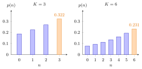

M/M/1/K Queue¶
Definition¶
The queue has Poisson arrivals with rate , one server with independent exponential service times of rate , and room for at most jobs in total: one in service and waiting. A job that arrives while jobs are present is blocked and lost. It is the birth-death queue with
With , the level-crossing equations give, for ,
and for .
Interpretation¶
A finite waiting room turns excess demand into lost jobs instead of an ever longer queue. Because the state space is finite, a stationary distribution exists for every , also when ; the price is a gap between the offered arrival rate and the rate at which jobs actually enter.

The bars are the barber of Example 1, with . Because , the probabilities increase with and the largest mass sits at the capacity: the orange bar is the fraction of time the shop is full, for and for . Doubling the capacity lowers the blocking probability by less than a third.
The fraction of arrivals that is blocked equals by PASTA: blocked customers still arrive at rate , they only fail to enter, so . The level-crossing equation must use , however, because blocked arrivals do not move the state up. For the same reason Little's law needs the admitted rate: .
The normalizing sum is a finite geometric series. If and , the distribution tends to that of the queue. A common slip is to equate the utilization with : the server works only for admitted jobs, so the utilization is .
Key Results¶
- for and ; no stability condition is needed.
- Blocking: the fraction of time the system is full and the fraction of arriving jobs that is rejected are both ; note .
- Mean acceptance rate (equation 5.1.4): ; it is the throughput.
- Utilization (equation 5.1.5): (Exercise 5.1.11).
- , , and .
- For , as , so all performance measures converge to those of the queue (Exercise 5.1.12).
Examples¶
1. The barber's shop (Exercise 5.2.7). Six customers arrive per hour and a haircut takes 12 minutes, so , and . With one chair in service and two for waiting, ; the weights add up to , so
Then and the barber serves customers per hour; his utilization is . With three extra chairs, , , per hour and . The extra room adds about customers per hour but triples the queue; since the barber is overloaded, a second barber helps more.
2. Using the wrong rate in Little's law. In the shop, hours minutes. Dividing by the offered rate instead, hours minutes, counts the blocked customers as if they had joined with zero wait, and understates the wait of those who do join.
3. Capping Riley's oven (Section 5.2). With , and , and , so about of the jobs are rejected and per hour. The utilization falls to , and hours, against jobs and hours without the cap. Raising to reproduces the values, as Exercise 5.1.12 predicts for .
Prerequisites¶
Related Concepts¶
- Erlang B Model
- Birth-Death Queue
- Balance Equations
- Waiting-Time Admission Control
- Server Utilization
- Balking
- Batch Rejection Policy
Sources¶
- Stochastic Operations Research · Week 4
- N. D. van Foreest, Sample Path Analysis and Simulation of Stochastic Systems, Sections 5.1 and 5.2
Aliases: M/M/1/K, M/M/1 queue with finite capacity, single-server loss and delay queue, finite-buffer M/M/1 queue, M/M/1 queue with blocking Keywords: \lambda^+(n) = \lambda\mathbf{1}{n<K}, p(n) = (1-\rho)\rho^n/(1-\rho^{K+1}), \lambda(1-p(K)), blocking probability, loss probability, acceptance rate, system capacity K, waiting room, throughput Symbols: infinity, lambda, mu, pi, rho, sum
Last updated: 29 October 2026 20:42
M/M/1/K QueueBalkingBatch Rejection PolicyM/M/1 QueuePoisson Arrivals See Time AveragesLittle's LawGeometric SeriesErlang B ModelBirth-Death QueueBalance EquationsWaiting-Time Admission ControlServer Utilization